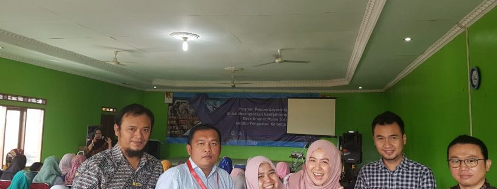

Kegiatan tersebut dilaksanakan dalam rangka Pengabdian Kepada Masyarakat, yang dilatarbelakangi oleh potensi yang dimiliki masyarakat Desa Karamat Mulya. Dimana di desa tersebut banyak kain perca hasil limbah pembuatan gamis, yang dapat dimanfaatkan menjadi barang yang bernilai tinggi. Menurut Asaas Putra, salah satu Dosen Fakultas Komunikasi dan Bisnis, “Program ini dilaksanakan dalam rangka mensinergikan potensi Dosen- Dosen dalam bidang Komunikasi, Bisnis serta Industri Kreatif dengan resources yang ada pada masyarakat Desa Karamat Mulya” . Lanjutnya lagi “Pada pelatihan ini diajarkan bagaimana membuat kain perca yang tadinya hanya dijual begitu saja sebagai limbah, kemudian dicoba untuk direkayasa sedemikian rupa dengan memberi value, kemudian dipacking dan selanjutnya dipromosikan sehingga nilai jual kain tersebut menjadi lebih. Selanjutnya pada bagian hilir, yaitu bidang promosi masyarakat juga diajarkan bagaimana memanfaatkan jaringan internet dengan membangun website khusus yang dikelola oleh masyarakat. Intinya, mensinergikan potensi dari hulu hingga ke hilir“.
Kegiatan yang berlangsung dua hari ini diisi dengan pelatihan peningkatan keterampilan produksi, pemasaran, dan pengelolaan badan usaha. Dimana para pematerinya di isi oleh para dosen Telkom University dari Prodi Ilmu Komunikasi, Prodi Administrasi Bisnis, Prodi Desain Produk, Prodi Desain Komunikasi Visual.